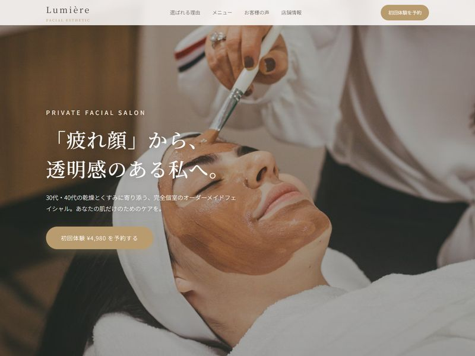
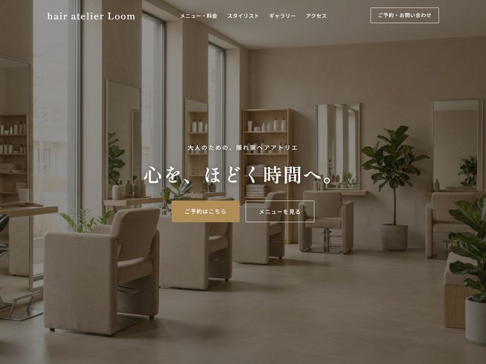
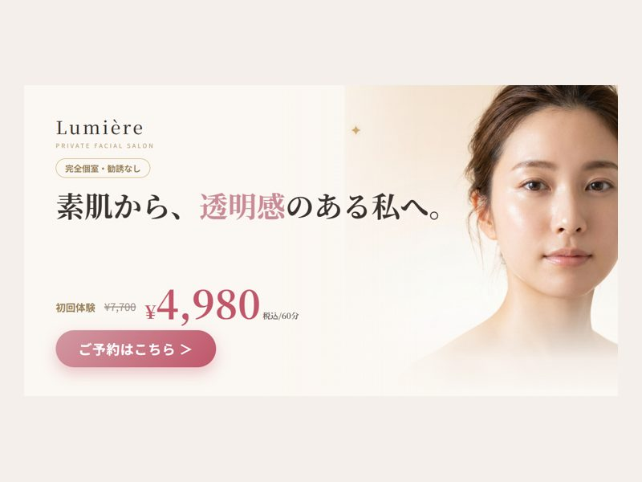

Freelance Web Designer
如月 ミナ ／ UIデザイン・LP制作・ブランディング
「かわいいだけで終わらせない。」数字で語れるデザインをつくるフリーランス6年目です。
ターゲット再設計とファーストビュー刷新を担当。
ロゴ・パッケージ・ECデザインを一貫担当。
オンボーディング改修を提案・実装。
最近の制作から。LP・Webサイト・広告バナー。



お仕事のご相談・お見積りはお気軽に。まずは要件だけでも大丈夫です。